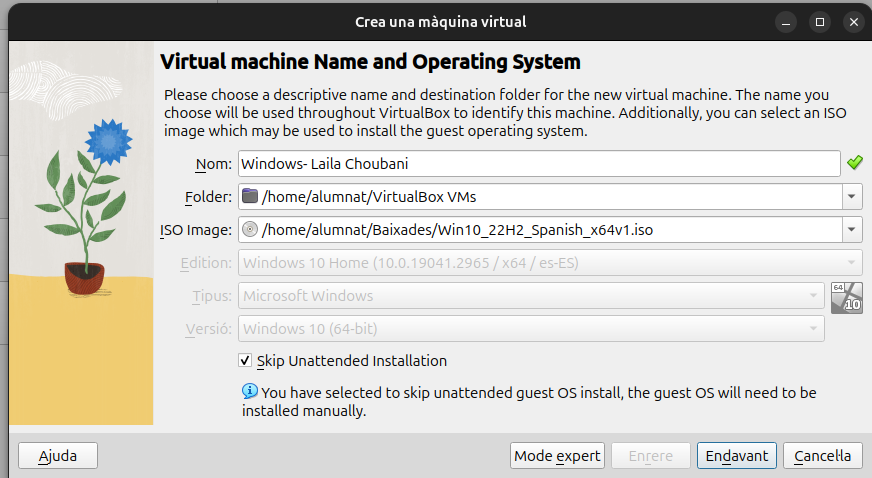
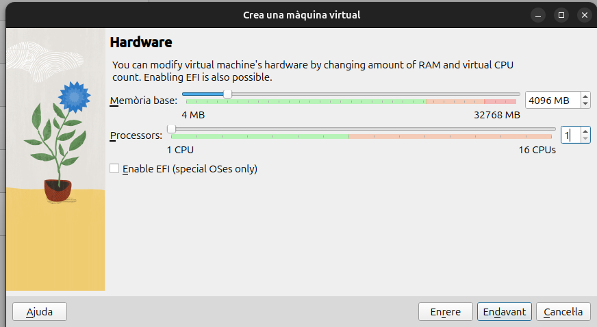
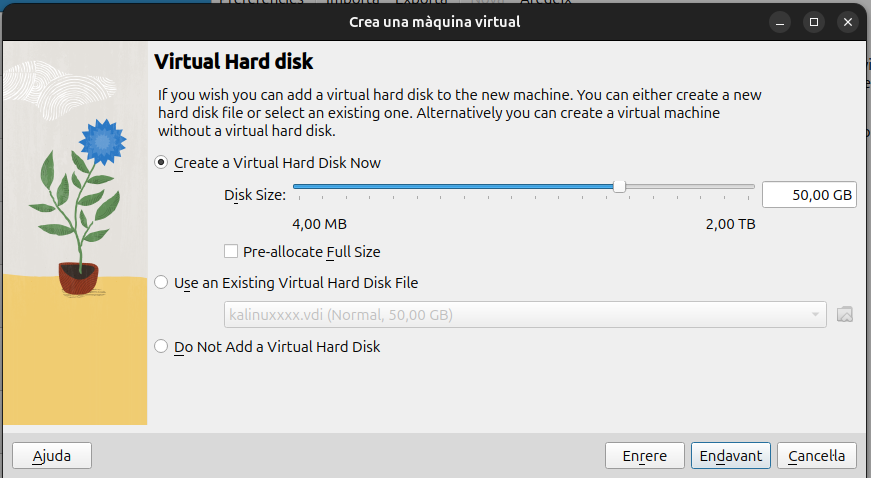
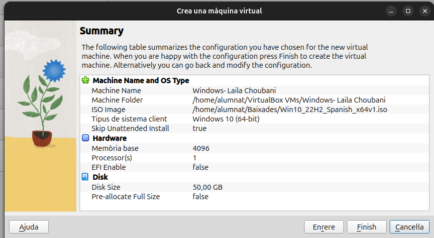
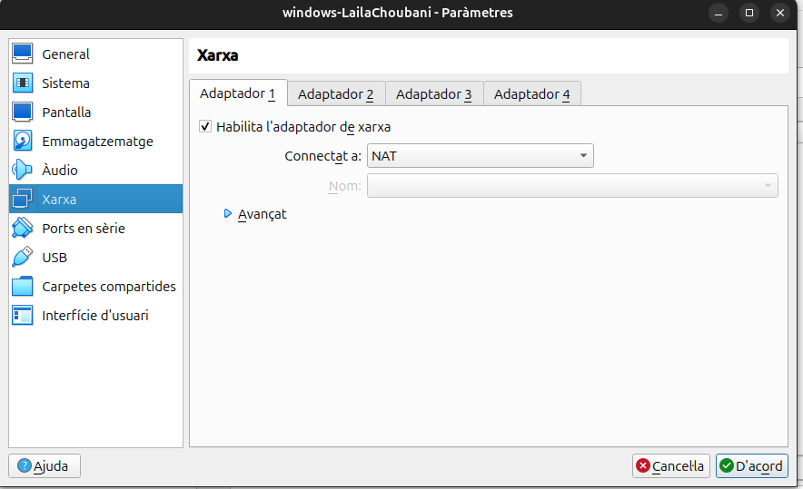
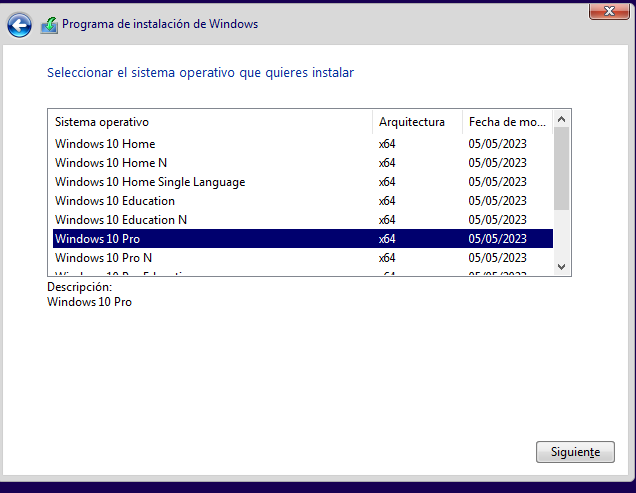
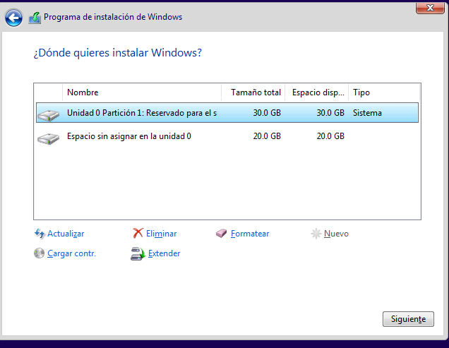
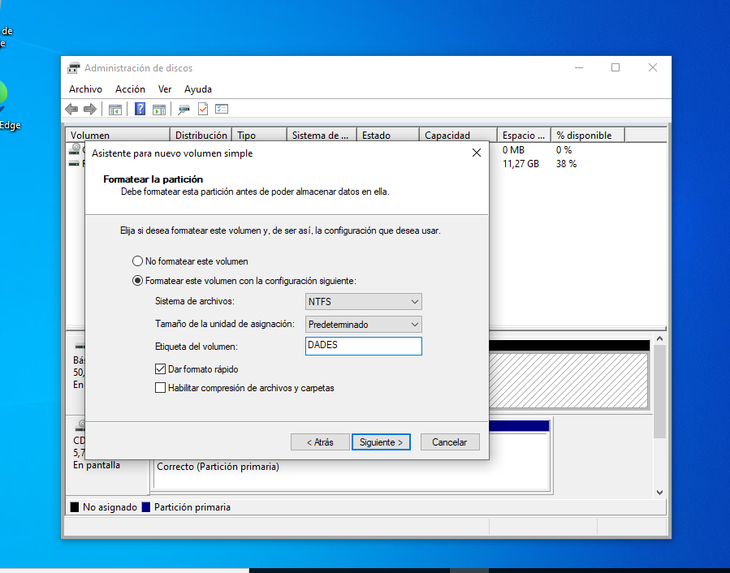

1. Màquina virtual, instal·lació i particions
-
He creat la màquina
Windows- Laila Choubania VirtualBox, amb 4096 MB de RAM i un disc de 50 GB.




-
He comprovat que l'Adaptador 1 està habilitat i en mode NAT.

-
He instal·lat Windows 10 Pro.

-
He creat una partició de 30 GB per a Windows i he deixat 20 GB sense assignar.

-
Amb
diskmgmt.msche creat el volum NTFSDADES.
